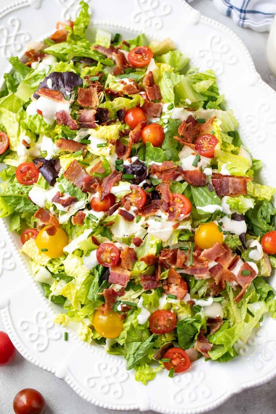
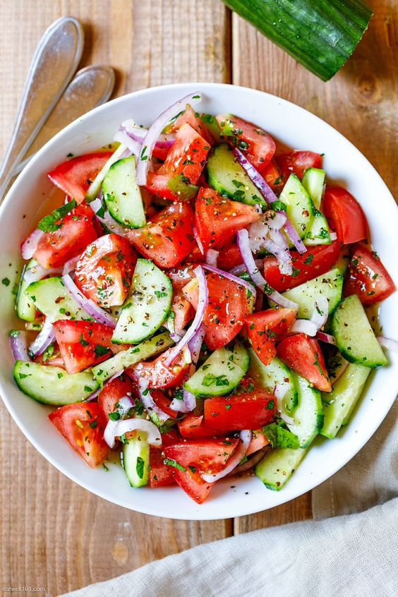
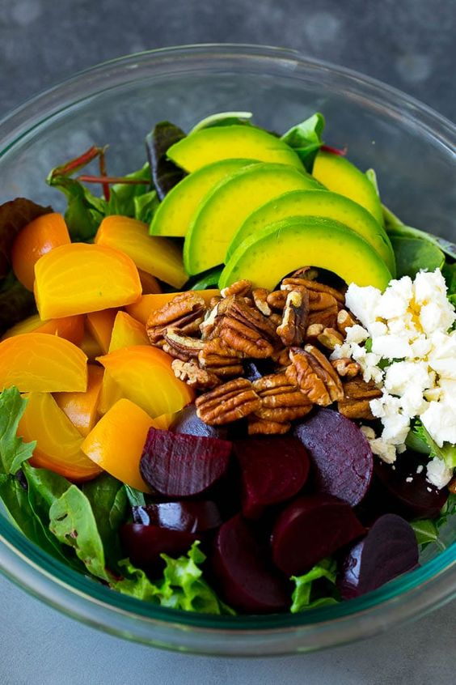
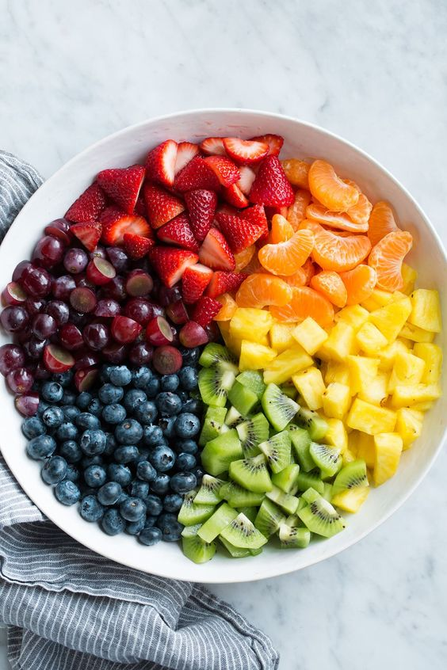
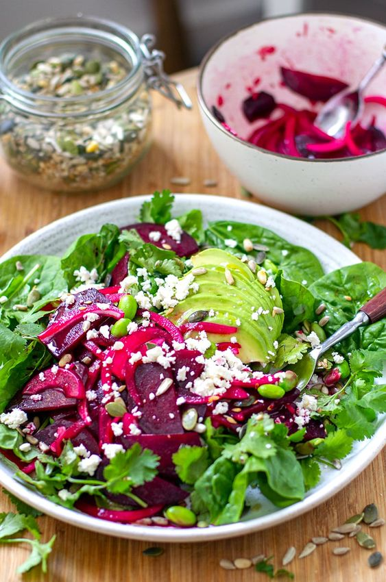

{% extends 'base.html' %} {% block content %}
{% block title %}THE SALAD BAR{% endblock %}
Lettuce and Tomato Vegetable Salad

Ingredients
- 1 bowl of chopped lettuce
- 1 large tomato
- Olive oil
- 1 large onion
- 1 avocado to be chopped into pieces
- 1 medium sized capsicum
- Salt
- 1 large carrot
Method
- Chop the onions and tomatoes
- Mix a pinch of salt in a bowl of water and place the onions
- Let them settle in the water for about 15 minutes
- Drain the water
- Add the sliced capsicum, lettuce, carrots, tomatoes, avocado, and onions
- Add a little salt
- And toss to mix
- Dress with olive oil
Cucumber Salad

Ingredients
- 1 large cucumber
- 1 large onion
- 1 small carrot
- 1 serrano pepper
- 1/4 cup chopped cilantro
- 1/2 teaspoon salt
- 2 tablespoon of olive oil
- 1 tablespoon of squeezed lemon juice
Method
- Peel the cucumber, get rid of the ends, and slice it into half lengthwise.
- Scrap the seeds off using a grapfruit spoon. A regular spoon can also work
- Cut the cucumber into thin moon-shaped slices
- Peel the carrot and grate it. Alternatively, you can chop it into small pieces
- Cut the end of thr serrano pepper then cyt the pepper in half lengthwise.
- Mix everything in a large bowl
- Cover the bowl with a piece of plastic paper or a dishtowel.
- Let it settle for about 30 minutes and serve
Cucumber, beetroot and mango salad

Ingredients
- 1 large sliced cucumber
- 1 large grated beetroot
- 1 cup of chopped lettuce
- 1 cup of diced mangoes
- 1 teaspoon of lemon extract
Method
- Slice the cucumber, grate the beetroot and chop the lettuce
- Use a large bowl to add the mixture
- Sprinkle with the lemon extract and toss
- In a medium-sized bowl, add cucumber, beetroot, lettuce, mango and mix well.
- Sprinkle the lemon extract and toss
Basic Kenyan Fruit Salad

Ingredients
- One large mango medium-sized diced mango
- 1/2 fairly sized pawpaw
- 1/2 fairly sized diced pineapple and watermelon
- One medium-sized beetroot
- 3 large bananas cut into circular slices
- 1 avocado slice
Method
- Dice the pineapple, pawpaw, watermelon, and mango.
- Grate the beetroot and cut the bananas into circular pieces
- Slice the avocado in the same way.
- Use a large bowl to add all the ingredients
- Sprinkle some cream to improve taste
- Mix thoroughly and serve
Avocado with beetroot and carrot salad

Ingredients
- 2 large beetroots to be cooked and 2 to be chopped
- 1 large avocado to be chopped
- 2 medium-sized carrots
- 1 large onion
- 2 tablespoons of chopped parsley
- Salt
Method
- Put the avocado in a large bowl
- Add salt.
- Use another small bowl to add the rest of the ingredients.
- Mix well to make a nice dressing.
- Add the dressing to the beetroot avocado mixture and toss.
- Garnish with parsley